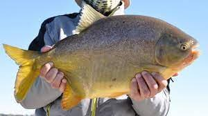
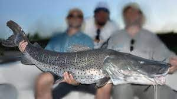
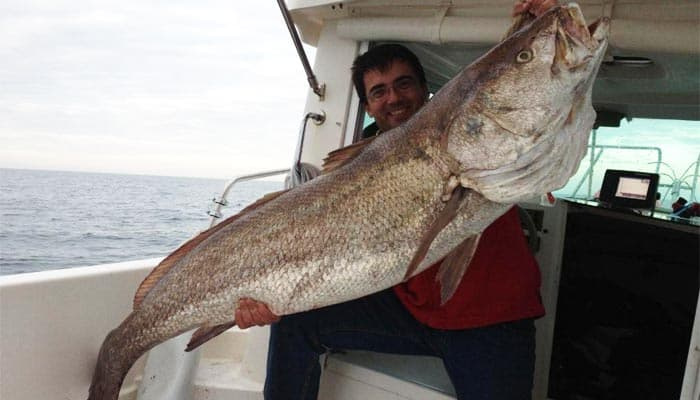

Excursiones
Pesca Del Dorado

durante el feriado del 17 de Agosto tiene lugar la Fiesta Nacional del Dorado en Paso de la Patria, Corrientes. la mejor época para pescar dorado suele ser en los meses de primavera y verano, que van desde septiembre hasta marzo. Durante estos meses, el agua se encuentra en una temperatura adecuada para el dorado y las condiciones climáticas son ideales para la pesca.
InscripciónPesca Del Pacu
Los lugares más populares para pescar pacú son el río Paraná, el río Uruguay, el río Bermejo y el río Pilcomayo. También se pueden encontrar en algunas lagunas y embalses. La Fiesta Nacional del Pacú es una emblemática festividad que se realiza anualmente en la ciudad de Esquina, Corrientes. El evento principal es una competencia de pesca deportiva embarcada sobre las aguas del Rio Paraná y del Rio Corrientes, que tiene como especie exclusiva al Pacú, pez de alto valor deportivo. En la fecha del mes de febrero El pacú se puede pescar durante todo el año, pero hay épocas en las que es más activo y más fácil de capturar. La mejor temporada para pescar pacú en Argentina es de noviembre a marzo.
InscripciónPesca del Surubi
El Fiesta Nacional del Surubí que se desarrollará del 24 al 30 de abril 2023 en la segunda ciudad de la provincia de Corrientes. Del 16 de Marzo al 14 de Agosto pescadores de todo el país llegan a la ciudad para buscar al Gran Pez.
InscripciónPesca De La Corvina
La temporada de pesca en aguas salvajes arranca a finales del verano, siendo septiembre y octubre los meses habitualmente más apreciados por los profesionales para sacarle partido en fresco. Mar de Ajó se prepara para la 53ª Fiesta de la Corvina Rubia y Promoción Turística, donde se podrá disfrutar de espectáculos, patio de comidas, desfile institucional, concurso de pesca y una variedad de actividades para disfrutar en familia. El evento que cada año convoca a vecinos de todo el Partido de La Costa también espera recibir una importante cantidad de visitantes ya que se desarrollará durante 18 al 21 de noviembre.
InscripciónPesca Del Pejerrey

Los meses de pesca varían de mayo a fines de agosto, siendo junio y julio los meses de mayor actividad.
Inscripción